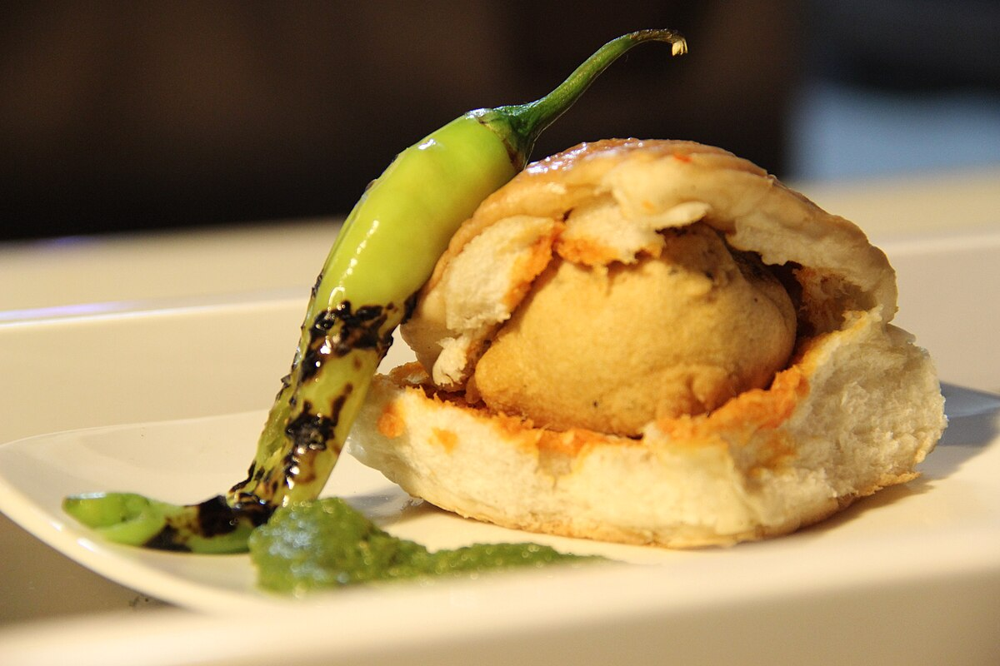

How To Make Vada Pav At Home

Discription:
Vada-Pav is a popular Indian street food consisting of a spicy potato fritter (vada) nestled
inside a soft bread roll (pav), typically served with chutneys. The key ingredients for the vada include boiled
potatoes, gram flour (besan), and various spices. For the pav, you'll need bread rolls and chutneys like green
chutney, tamarind chutney, and dry garlic chutney.
ingredient:
For The Vada (Potato fritters):
- Potatoes: 2-3 medium, boiled and mashed
- Besan (Gram Flour): 1 cup
- Rice Flour: 1 tablespoon (optional, for crispiness)
- Spices:
- Mustard seeds: 1/2 teaspoon
- Cumin seeds: 1/2 teaspoon
- Ginger-garlic paste: 1 teaspoon
- Turmeric powder: 1/2 teaspoon
- Green chilies: 1-2, finely chopped
- Curry leaves: 5-6, chopped
- Asafoetida (Hing): Pinch
- Cilantro (coriander leaves): 2 tablespoons, chopped
- Salt: To taste
- Oil: Oil for deep frying
For The Batter:
- Besan (Gram Flour): 1 cup
- Rice Flour: 1 tablespoon (optional, for crispiness)
- Turmeric Powder: 1/4 teaspoon
- Red Chili Powder: 1/4 teaspoon
- Baking Soda: A pinch (optional)
- Salt: To taste
- Water: To make a thick batter
For The Pav (Bread Rolls):
Pav (Bread rolls/Dinner Rolls): 6-8 and Butter: For toasting (optional).
For the Chutneys:
- Green Chutney:Cilantro, green chilies, garlic, lemon juice, salt
- Dry Garlic Chutney: Garlic, dry coconut, red chilies, sesame seeds
- Sweet Tamarind Chutney:Tamarind, jaggery, cumin seeds, ginger powder, red chili powder,
salt (optional)
Procedure:
- Prepare The Potato Filling:
- Boil and mash the potatoes.
- Heat oil in a pan and add mustard seeds, cumin seeds, curry leaves, asafoetida, and ginger-garlic paste.
Saute.
- Add chopped green chilies, turmeric powder, salt, and cilantro.
- Mix well and saute for a minute.
- Add the mashed potatoes and mix thoroughly.
- Cook for a few minutes until the mixture is well combined and set aside to cool.
- Make small, round balls of the potato mixture.
- Prepare the Vada Batter:
- In a bowl, combine besan, rice flour (if using), turmeric powder, red chili powder, salt, and baking
soda (if using).
- Add water gradually to make a thick, lump-free batter.
For Serving:
Fried green chilies (optional) and Ketchup (optional).